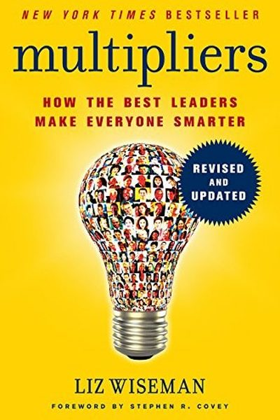

Library › Business & Startups
Multipliers — Summary & Key Lessons

How the best leaders make everyone smarter — versus the diminishers who drain the room of intelligence.
📖 OPEN THE FULL INTERACTIVE BREAKDOWN →🌐 Read it in Hindi, Hinglish, Gujarati, Tamil & 22 more languages — free, with audio.
💡 The Big Idea
Wiseman studied 150+ leaders and found two types: Multipliers, who get more than 100% from their teams (people 'work harder and smarter' around them), and Diminishers, who get less than 50% (people 'wait to be told'). Multipliers ask questions instead of giving answers, build genuine stretch into roles, debate rigorously, and give ownership of the whole problem. Intelligence is a resource — Multipliers harvest it, Diminishers waste it.
🧠 The 5 Key Lessons
Lesson 1: The Multiplier Effect: 2x or 0.5x
The Multiplier Effect
The same team performs at radically different levels under different leaders: Multipliers double output, Diminishers halve it — not by changing the people, but by changing how much intelligence gets used. The leader's own intelligence matters less than their ability to harvest the room's.
📖 Example: Wiseman's study: a factory manager who was 'a genius at operations' left; his replacement asked questions instead of giving orders — and the same workforce hit new records. Same people, different multiplier. Read the full example →
⚡ Do this: In your next team discussion, ask ONE question you genuinely don't know the answer to — and let the room answer. Watch the energy shift.
Lesson 2: The Diminisher's Trap: The Smartest Person in the Room
The Diminisher
Diminishers often got promoted for being brilliant — so they answer before others can think, decide before others can contribute, and rescue failing tasks personally. The effect: people stop thinking, stop offering, and wait for instructions. The genius becomes the bottleneck.
📖 Example: Wiseman describes a CEO who solved every problem himself; his executives stopped bringing problems — they brought nothing. The company's intelligence went unused because it was never needed. Read the full example →
⚡ Do this: Catch yourself 'rescuing' a task this week. Instead of solving it, ask the person: 'What would you do?' Then let them do it.
Lesson 3: Ask Big Questions, Don't Give Big Answers
The Multiplier
Multipliers lead with questions: 'What would it take to 10x this?' 'What are we missing?' They set the challenge, then let the team stretch to meet it. People around Multipliers report feeling smarter — because they're the ones doing the thinking.
📖 Example: A tech CEO Wiseman studied framed a 'stretch goal' as a question and left it with the team; they invented a solution none of them — including the CEO — had imagined. The question, not the answer, was the gift. Read the full example →
⚡ Do this: Reframe your next assignment as a big question: 'How could we make this 10x better?' Give the team 48 hours before you share your own idea.
Lesson 4: Debate: The Heat That Hardens Ideas
The Debate
Multipliers create forums where ideas are challenged hard — then commit to the winner. Debate is not conflict; it's the fastest way to find the flaw early. Diminishers avoid debate (or make it personal); Multipliers make it safe and rigorous: 'attack the idea, never the person'.
📖 Example: Wiseman's examples: teams where the CEO plays devil's advocate deliberately — ideas that survive get 10x stronger, and people stop hiding weak plans. Read the full example →
⚡ Do this: Appoint a devil's advocate in your next decision meeting — someone whose job is to attack the plan. Thank them publicly for it.
Lesson 5: Give the Whole Problem, Not the Chore
The Investor
Diminishers hand out tasks; Multipliers hand out whole problems with context and trust — then stay available as a resource. When people own the entire outcome (not a piece), they think like owners, catch problems early, and grow. Ownership is the ultimate multiplier.
📖 Example: A manager Wiseman studied handed a junior lead the full client account — results, relationship, budget — and told her 'I'm here if you need me'. She ran it like it was hers, and it outperformed every account before it. Read the full example →
⚡ Do this: Pick one task you usually delegate in pieces. Hand over the WHOLE thing with context, a deadline and an open door. Don't touch it for two weeks.
✅ 5-Step Action Plan
- Ask one question you don't know the answer to, daily.
- Stop rescuing — ask 'what would you do?' first.
- Reframe one goal as a 10x question for the team.
- Run one devil's-advocate debate this week.
- Hand over one whole problem, with trust and context.
⚠️ When This Doesn't Work
Wiseman's 'multipliers amplify others, diminishers drain them' is the cleanest leadership framework ever — and IBM's MS-DOS deal is the proof that a multiplier can multiply the wrong thing: IBM was the world's greatest company, its leaders were celebrated multipliers, and they outsourced the operating system for their own PC to a 24-year-old — creating Microsoft — because they couldn't imagine software was the future. They multiplied everyone except their own ambition. The book's blind spot: multiplying your people is not the same as multiplying your relevance. Amplify your team, and also amplify your willingness to cannibalize your own model.
💀 The Graveyard Proves It
🖥️ IBM's PC Deal — Handed Microsoft the Throne for Pocket Change. Burn: The most valuable industry in history. Read the full case study →
💬 Best Quotes from Multipliers
- “Multipliers get 2x more from their people — not by working them harder, but by making them smarter.”
- “The best way to multiply is to ask questions you don't know the answer to.”
- “Diminishers are often the smartest person in the room — which is exactly the problem.”
Interactive version: mark lessons as read, listen in your language, share quote cards.